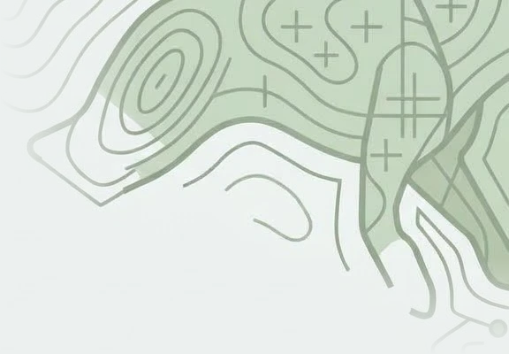
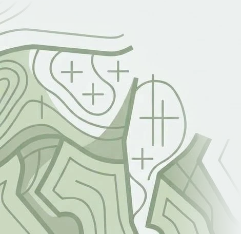
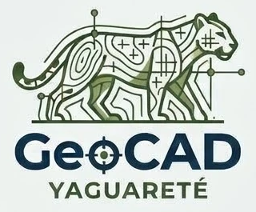
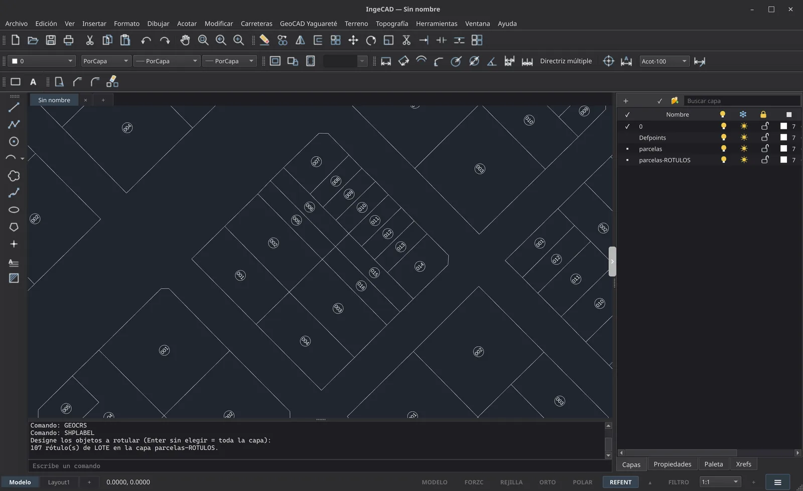
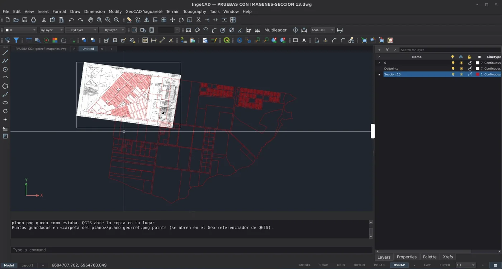
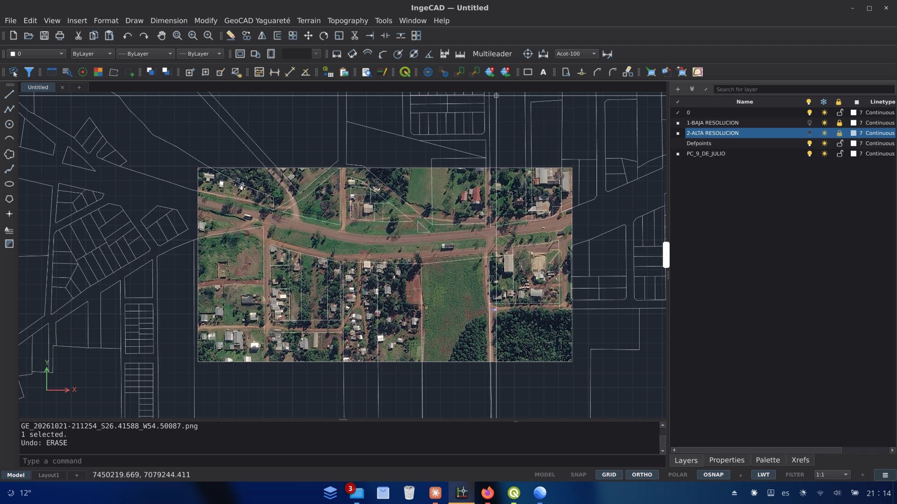
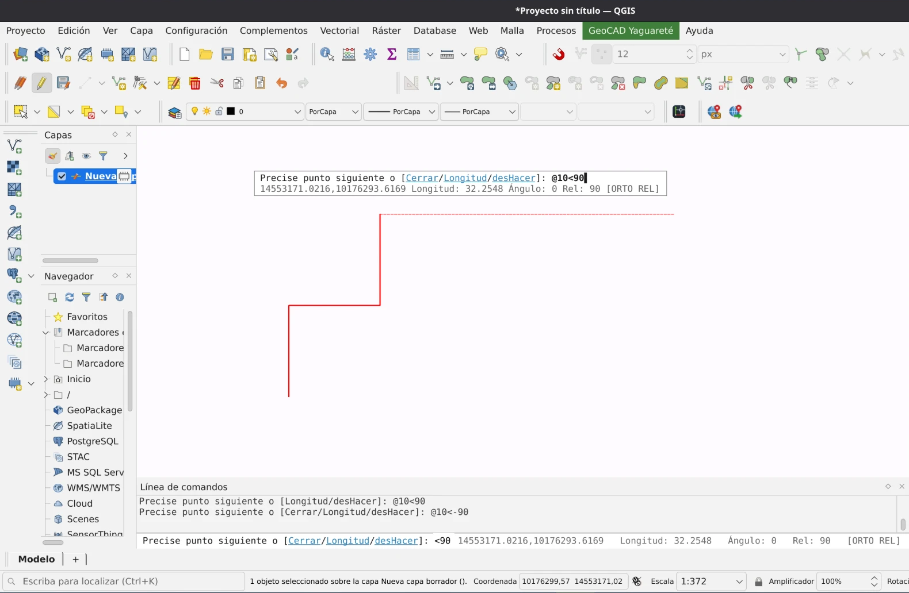
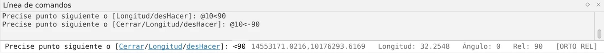
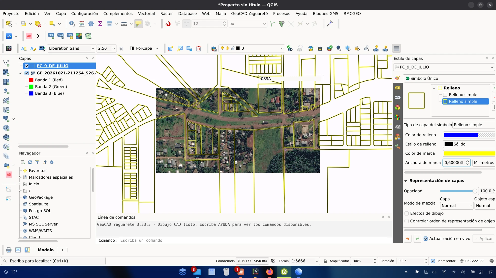
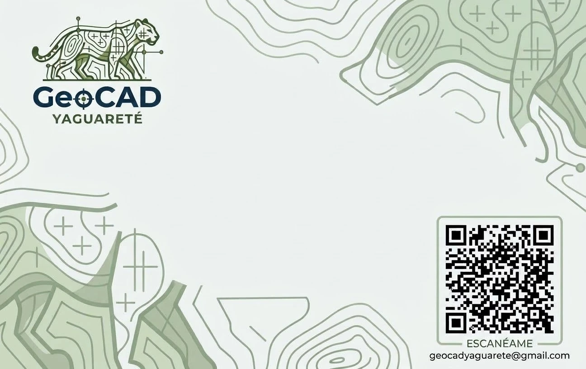

INGECAD · QGIS
De la mesa de dibujo y el papel vegetal al software libre en las oficinas del Estado.

GeoCAD Yaguareté
EN VIVO
¿Por qué vincular estos dos programas?
LA CULTURA DEL PAPEL
La lámina horizontal y el doblado decidían cómo se dibujaba.
Normas y acuerdos heredados del registro en papel.
Cada municipio, las secciones, las chacras y los manzaneros, por su lado.
Los primeros usuarios del CAD nunca pudieron sistematizar la confección de los planos.
GeoCAD Yaguareté
EN VIVO
Los primeros usuarios del CAD, provenientes de los empleos generados por organismos donde se registraban inmuebles, nunca pudieron abordar la problemática de la confección de inmuebles de forma sistematizada.
Sus planos, representados en el mejor de los casos por polígonos, o por líneas en su defecto, seguían presiones que venían de la cultura de registrar en papel.
Condicionantes como el tamaño del papel, la horizontalidad de la hoja, el doblado de láminas, y normas o acuerdos como, por ejemplo, el Norte para arriba.
CADA PARCELA, UN POLÍGONO
Su misión era estar en esa maraña de pequeños polígonos, compitiendo por existir.
Un polígono casi igual al de la mensura. Y ni hablar de borrar para unificar, o de subdividir para un loteo nuevo.
GeoCAD Yaguareté
EN VIVO
Las parcelas de un determinado municipio o departamento tenían que ser representadas en láminas separadas, como así también los planos de sección, las chacras y los manzaneros.
Cada parcela simplemente debía estar representada por un polígono infinitesimalmente similar al de la mensura; su misión era estar en esa maraña de pequeños polígonos compitiendo por existir.
Ni hablar de la problemática de borrar para hacer unificaciones y la de subdividir para generar nuevos loteos.
DE LA MESA AL MONITOR
Enormes mesas de dibujo, donde se apoyaban los planos para mostrarlos y debatirlos.
Puestos chicos con computadoras gigantes: el monitor ocupaba todo, y no había lugar ni para apoyar el mate.
Surgían nuevos puestos, criterios de registro y formas de archivo, pero seguían apoyados en los anteriores, que todavía daban el orden y la legitimidad de todo el proceso.
GeoCAD Yaguareté
EN VIVO
Esta fue la problemática que debieron abordar los primeros dibujantes de CAD al dejar sus enormes mesas de dibujo por pequeños puestos de trabajo con computadoras gigantes, donde solo el monitor ocupaba todo el espacio disponible, al punto que ni lugar para apoyar el mate había.
Así iban surgiendo nuevos puestos de trabajo, nuevos criterios de registro y formas de archivo de documentos que convivían y estaban apoyados en los anteriores, que seguían estableciendo los órdenes y la legitimidad de todo el proceso ancestral.
LOS PRIMEROS DIBUJANTES DE CAD
Láminas impresas para seguir usando el copiado heliográfico.
Cada polígono por separado, con un texto en un círculo que debía caber en la parcela.
Para las nuevas y las viejas generaciones de archiveros de planos.
GeoCAD Yaguareté
EN VIVO
Algo que recuerdo de los primeros dibujantes de CAD: había que reemplazar esos pergaminos antiguos por láminas impresas en papel vegetal, para poder seguir usando las técnicas de copiado heliográfico.
Dibujar los polígonos por separado y agregarles un texto que los identifique; en el mejor de los casos ese texto era rodeado por un círculo, y ambos debían caber en el espacio de la parcela y ser legibles por el ojo humano de las nuevas y viejas generaciones de archiveros o archivadores de planos.
2
Nuevas tecnologías aplicadas a las viejas técnicas
GeoCAD Yaguareté
EN VIVO
Gurús de la información y celosos guardianes de sus adorados papiros, que les daban sentido a sus vidas asegurando, en consecuencia, sus fuentes de empleo.
La etapa siguiente, con la aparición de los Sistemas de Información Geográfica.
Primero hicieron su desembarco las grandes desarrolladoras de soluciones CAD, para impulsar el uso de las nuevas tecnologías aplicadas a las viejas técnicas.
AUTOCAD MAP
Cada parcela, un polígono cerrado.
Cada polígono vinculado a su registro en una base de datos nativa del archivo.
El rótulo con su círculo, centrado en el polígono.
GeoCAD Yaguareté
EN VIVO
AutoCAD Map marcó un cambio rotundo en la forma de dibujar y en la cultura de registrar.
Las parcelas tenían que ser representadas por polígonos cerrados, y estos podían estar vinculados a una base de datos nativa del archivo DWG, donde cada polígono tenía su correlación con un dato en una base de datos donde se podía identificar y acceder a información propia de los registros de inmuebles.
Aparecieron aplicaciones que estampaban las etiquetas con la opción de agregar un círculo centrado en el epicentro de los polígonos; esto permitió hacer uso de esta nueva cultura de contar no solo con el polígono, sino también con los datos asociados en su base de datos interna.
EL ARCHIVO SE MUDA AL ESCRITORIO
Largas mesas donde se apoyaban los inmensos planos para mostrar y debatir legitimidades y datos de inscripción.
Puestos mucho más chicos, con acceso a datos muy importantes para atender al ciudadano en sus trámites.
GeoCAD Yaguareté
EN VIVO
Dando la posibilidad de imprimir planos muy parecidos a los que estaban en las estanterías de los organismos registrales.
De a poco, todo este nuevo bagaje de información generó puestos de trabajo de escritorio donde los archiveros eran oficinistas sin estanterías, que accedían a datos muy importantes para ofrecer a los ciudadanos que venían a hacer sus trámites,
en puestos de trabajo muy pequeños comparados con las largas mesas donde se apoyaban los inmensos planos para mostrar y debatir legitimidades y datos de inscripción.
ARCGIS · ARCVIEW
GeoCAD Yaguareté
EN VIVO
De a poco, los programas que ofrecían una batería de soluciones basadas en estas nuevas tecnologías entraron al mercado, ofreciendo trabajar no solo con información vectorial, sino también con imágenes satelitales y bases de datos, de manera mucho más amigable y familiar para los que venían de este mundo tan específico.
Así llegaron los primeros SIG administrados por estos programas, «ArcGIS», «ArcView»: programas con llaves y licencias carísimas e inaccesibles para el común de los operarios de oficinas públicas.
LAS CONSULTORÍAS
Un traspaso de tecnología que nunca llegaría a las nuevas generaciones de trabajadores.
Con el argumento de modernizar el Estado, se instaló un servicio tercerizado: un Estado cautivo y empresas privadas a cargo de información pública.
GeoCAD Yaguareté
EN VIVO
Esto favoreció la proliferación de consultorías dedicadas a la administración tercerizada de información territorial de muchos organismos públicos.
Con los argumentos de crear las condiciones para la modernización del Estado, que debidamente sería depositario de un traspaso de tecnología que nunca llegaría a cumplirse con las nuevas generaciones de trabajadores.
3
Llevar estas tecnologías a las nuevas generaciones de trabajadores
GeoCAD Yaguareté
EN VIVO
Eso sí, se instalaría una modalidad de servicio tercerizado, con un Estado cautivo y empresas privadas ocupándose de información que no debería ser de acceso público, favoreciendo un ambiente de administraciones de mucho personal sin capacidades adquiridas y bajos sueldos.
Razón por la cual decidí sumarme al proyecto de un ingeniero peruano, Marco Sumari Tellez, con las mismas vocaciones e intenciones de crear un software libre y gratuito que pueda funcionar bajo Linux.
INGECAD
Me sumé al proyecto de un ingeniero peruano, Marco Sumari Tellez, que tenía las mismas vocaciones e intenciones.
Para los trabajadores de organismos estatales con pocos recursos y presupuestos recortados.
Para popularizar estas tecnologías entre las nuevas generaciones de trabajadores.
GeoCAD Yaguareté
EN VIVO
Razón por la cual decidí sumarme al proyecto de un ingeniero peruano, Marco Sumari Tellez, con las mismas vocaciones e intenciones de crear un software libre y gratuito que pueda funcionar bajo Linux.
Lo que completó mi idea de popularización de las tecnologías a las nuevas generaciones de trabajadores, en especial de trabajadores de organismos estatales de bajos recursos y presupuestos recortados.
MI APORTE A INGECAD
Fácil de compartir entre oficinas.
Los de los SIG, como si fueran nativos.
Satelitales, con su sistema de coordenadas.
La información de cada parcela, en el dibujo.
Planos manejados como nunca imaginamos.
Soluciones para los problemas de cada día.
GeoCAD Yaguareté
EN VIVO
Mi aporte fue dotar a IngeCAD de todas aquellas herramientas que estaban disponibles en softwares de costos y licencias inaccesibles,
dando como resultado un conjunto de soluciones capaces de resolver los problemas cotidianos de cualquier organismo público que tenga oficinas donde sus trabajadores deban manipular y producir información de sistemas CAD con formatos nativos DWG, fáciles de compartir,
LOS EJERCICIOS DEL MANUAL · INGECAD

Práctica 2.B · La manzana rotulada

2.D · Plano viejo

3.A · Google Earth
GeoCAD Yaguareté
EN VIVO
adicionándoles las posibilidades de interpretar archivos provenientes de sistemas de información geográfica SHP como si lo hicieran de forma nativa;
que leyeran y manipularan imágenes satelitales e interpretaran sistemas de coordenadas de forma inmediata y sin grandes complicaciones; que manipularan tablas de información y bases de datos;
que manipularan imágenes como planos de mensura de maneras que nunca imaginamos en un software gratuito de uso libre.
CAPÍTULO APARTE: QGIS
Una comunidad que desarrolla las soluciones.
Cada vez más parecido a los programas más caros.
Popularizó el oficio de los trabajadores del territorio.
GeoCAD Yaguareté
EN VIVO
Capítulo aparte: QGIS.
La aparición de QGIS marca un hito entre los usuarios de GIS: un software construido sobre un concepto nuevo, una comunidad que desarrolla soluciones que van adquiriendo cada vez más similitudes a las herramientas de los softwares más caros del mercado.
Esto popularizó el oficio de una nueva camada de trabajadores del territorio, entre los que me identifico.
QGIS CON GEOCAD

Tramos escritos: @10<90, @10<-90
Cerrar, Longitud, desHacer a un clic
La orden también junto al cursor
Coordenadas, ángulo y ORTO en vivo

GeoCAD Yaguareté
EN VIVO
Esto popularizó el oficio de una nueva camada de trabajadores del territorio, entre los que me identifico.
Y como tal, a lo largo de mi carrera he tenido grandes urgencias de soluciones que nunca estuvieron disponibles,
y las que surgieron de esta comunidad tampoco llegaron a cumplir con mis expectativas.
GEOCAD · QGIS

3.A · Google Earth
GeoCAD Yaguareté
EN VIVO
y las que surgieron de esta comunidad tampoco llegaron a cumplir con mis expectativas.
De ahí en más, el volcado de estas nuevas posibilidades a la propuesta de QGIS me deja muy satisfecho y orgulloso,
AYUDAS AL DIBUJO · REFERENCIAS A OBJETOS
Se apoya en una línea y la nueva sale paralela, con su guía de puntos.
La línea sigue más allá de su punto final y se toma un punto sobre esa prolongación.
Dos líneas que no se tocan: se prolongan y se toma el punto donde se cruzarían.
GeoCAD Yaguareté
EN VIVO
De ahí en más, el volcado de estas nuevas posibilidades a la propuesta de QGIS me deja muy satisfecho y orgulloso,
especialmente el hecho de poder hacer una devolución a esta comunidad que tantas alegrías me trajo al ejercer mi oficio de operario en el ámbito del Estado,
UNA DEVOLUCIÓN
Devolverle a la comunidad tantas alegrías que me dio el oficio.
Volcar estas posibilidades en QGIS me deja satisfecho y orgulloso. Y compartirlas con los compañeros que pasan día a día por las mismas carencias y dificultades.
GeoCAD Yaguareté
EN VIVO
especialmente el hecho de poder hacer una devolución a esta comunidad que tantas alegrías me trajo al ejercer mi oficio de operario en el ámbito del Estado,
y poder compartirlas y difundirlas entre compañeros que pasan día a día por las mismas carencias y dificultades.
GEOCAD YAGUARETÉ
Escaneá el código de la tarjeta para escribirnos.

GeoCAD Yaguareté
EN VIVO
y poder compartirlas y difundirlas entre compañeros que pasan día a día por las mismas carencias y dificultades.
¡Gracias!